Modules 1, 2, 3, 9, 10 · Based on course materials only
Module 1 — ML foundations
ML taxonomy
AI ⊃ ML ⊃ Deep Learning
Supervised — labeled data, f(X)→Y
Unsupervised — find structure in X
Semi-supervised — mix of both
RL — agent learns from rewards
Preprocessing pipeline
1. Clean — missing values, outliers
2. Transform — normalize, encode
3. Select/Extract — PCA or LDA
4. Split — train / val / test
⚠ Always split before scaling
PCA vs LDA
PCA — unsupervised, max variance
Uses covariance matrix
Max components: min(n−1, d)
LDA — supervised, max class separation
Uses Sw⁻¹SB
Max components: C−1
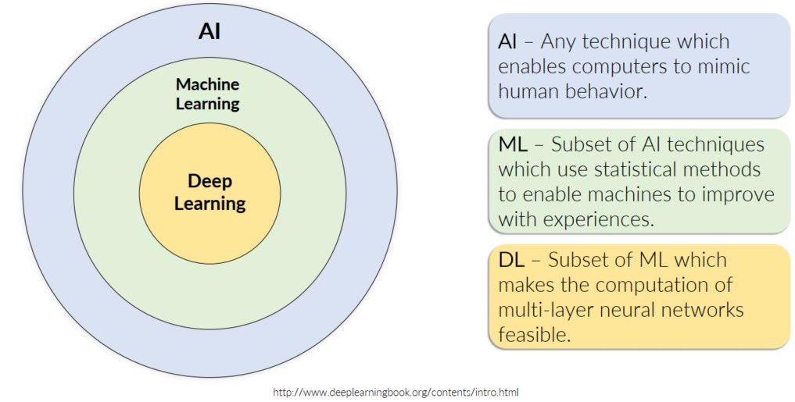
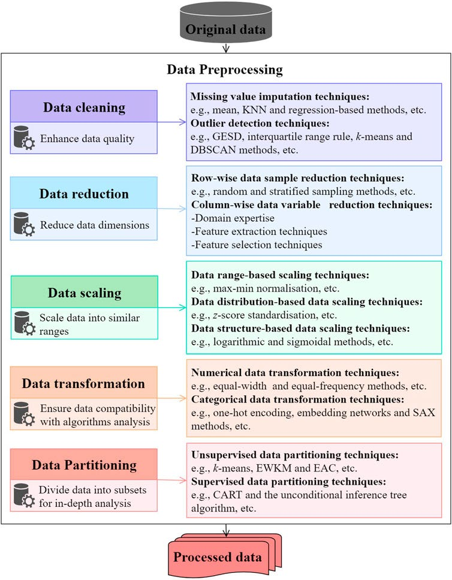
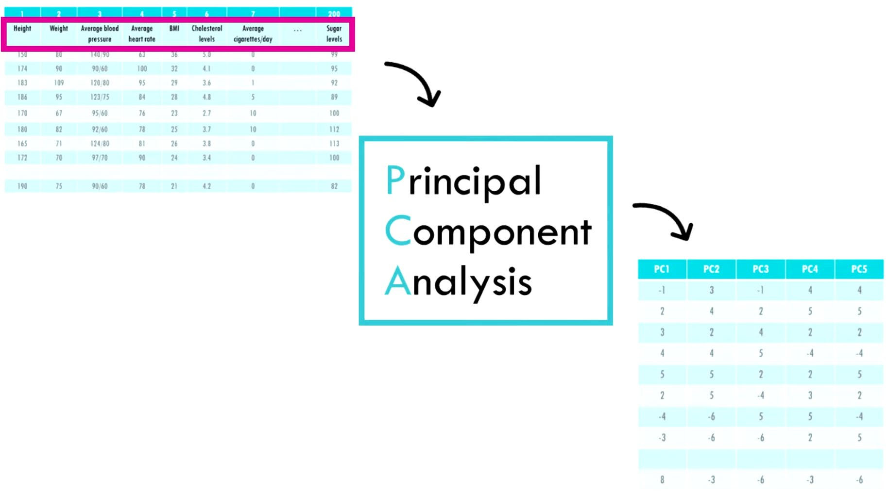
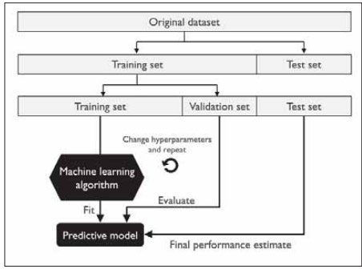
Module 2 — MLP and CNN
Backpropagation
Chain rule backward through layers
δᴸ = ∇ₐL ⊙ f′(zᴸ)
δˡ = (Wˡ⁺¹ᵀ δˡ⁺¹) ⊙ f′(zˡ)
W ← W − η ∇W L
Loss functions
MSE — regression
Binary CE — binary classification
Categorical CE — multi-class
Activation functions
Sigmoid — binary output; max grad 0.25
Tanh — zero-centered hidden layers
ReLU — default hidden layer choice
Leaky ReLU — avoids dying ReLU
Softmax — multi-class output
CNN
Conv → BN → ReLU → Pool
Output size: ⌊(W−k+2p)/s⌋+1
Early layers: edges/textures
Deep layers: shapes/objects
Parameter sharing → fewer weights
Regularization
Dropout — zero random activations
L1/L2 — penalize large weights
Batch norm — normalize layer inputs
Data augmentation — flip/crop/rotate
Early stopping — stop at val loss min
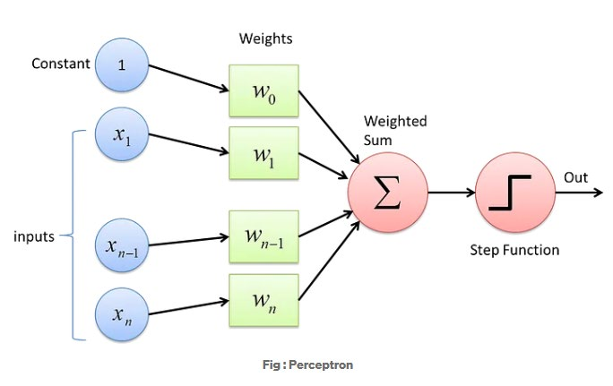
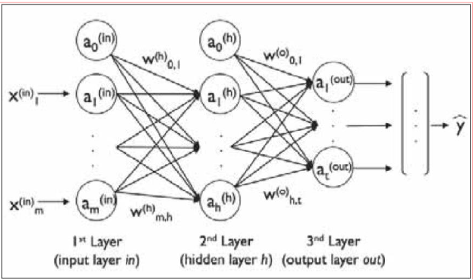
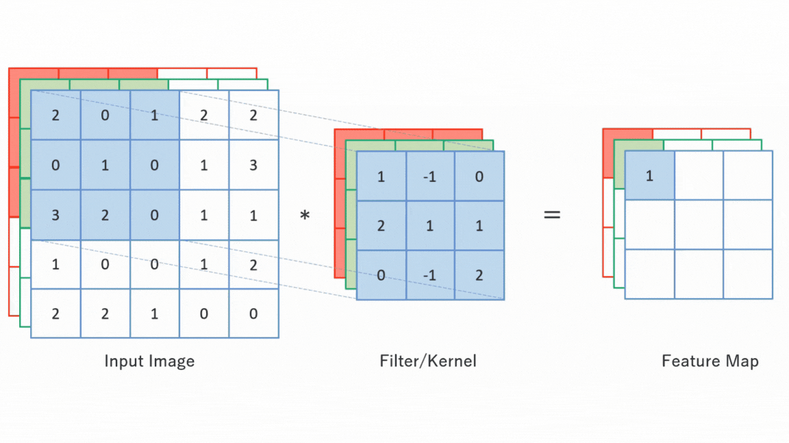
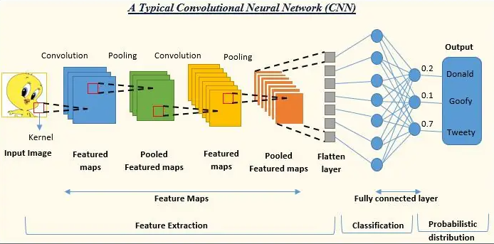
Module 3 — RNN, LSTM, GRU
Vanilla RNN
Hidden state carries memory across steps
hₜ = tanh(Wₓxₜ + Wₕhₜ₋₁ + b)
yₜ = Wᵧhₜ + bᵧ
Vanishing: |Wₕₕ|<1 → gradient → 0 for early steps
Exploding: |Wₕₕ|>1 → gradient → ∞ → fix with gradient clipping
LSTM gates
Forget fₜ — erase cell state
Input iₜ — write new info
Candidate C̃ₜ — new values
Output oₜ — expose hidden state
Cₜ = fₜ⊙Cₜ₋₁ + iₜ⊙C̃ₜ
hₜ = oₜ⊙tanh(Cₜ)
Additive update → no vanishing grad
GRU
Simplified LSTM — 2 gates only
Reset rₜ — how much past to forget
Update zₜ — interpolate old/new state
Fewer params, comparable performance
Variants
Bidirectional — forward + backward; full context
Stacked — multiple layers; higher abstractions
Word2Vec — dense embeddings; king−man+woman≈queen
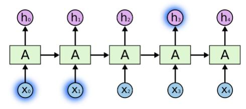
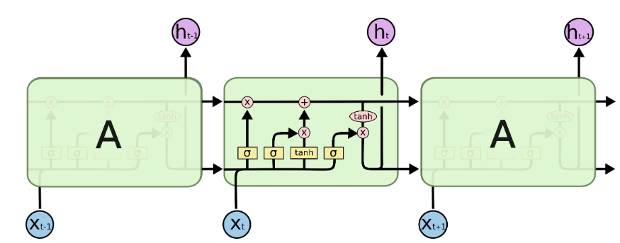
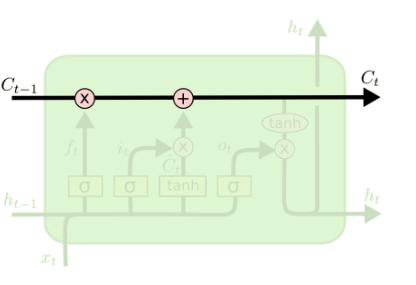
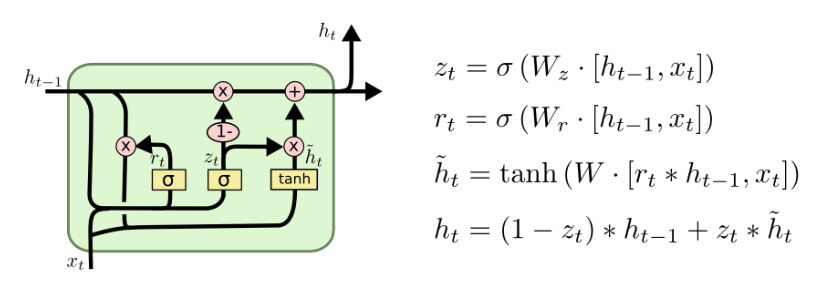
Module 9 — Autoencoders and VAE
Autoencoder family
Basic AE — compression, reconstruction
Denoising AE — noisy input → clean output
Sparse AE — L1 penalty on z
Contractive AE — Jacobian penalty
L = ||x − x̂||²
VAE
Encoder outputs μ and log σ² — not a point
z ~ N(μ(x), σ²(x))
L = E[log P(x|z)]
− KL(q(z|x) || N(0,I))
KL = -½ Σ(1 + log σᵢ² − μᵢ² − σᵢ²)
KL term → smooth, complete latent space
log σ² used for stability; σ = exp(½ log σ²)
Reparameterization trick
Sampling is not differentiable. Rewrite:
ε ~ N(0, I)
z = μ + σ ⊙ ε
Gradient flows through μ and σ; ε is fixed noise
AE vs VAE
AE — scattered points, gaps, can't sample
VAE — smooth continuous distribution, sample anywhere
β-VAE: β·KL → more disentangled factors
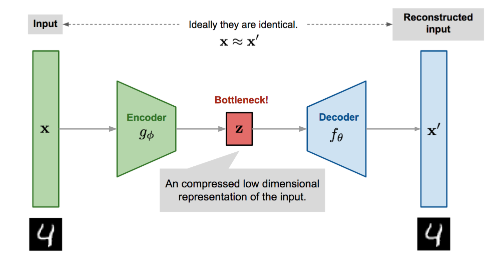
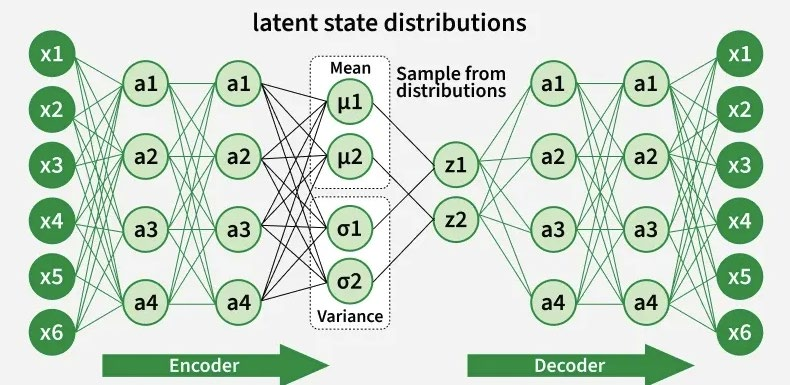
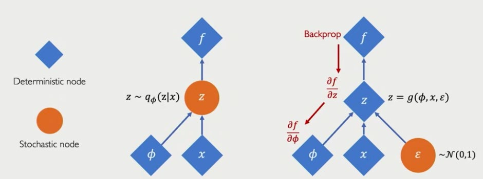
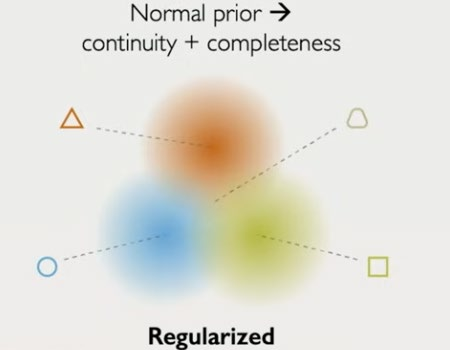
Module 10 — Attention, Transformers, GANs
Attention (Bahdanau)
Decoder attends to all encoder states — no bottleneck
cₜ = Σⱼ αₜⱼ hⱼ
αₜⱼ = softmax(score(sₜ₋₁, hⱼ))
Scaled dot-product attention
Attention(Q,K,V) =
softmax(QKᵀ/√dₖ) · V
/√dₖ prevents large dot products
n² dot products per head
Multi-head: h parallel heads concatenated
Transformer blocks
Encoder block (×N)
Multi-head self-attention
→ Add & Norm → FFN → Add & Norm
Decoder block (×N)
Masked self-attention (causal)
→ Cross-attention (Q from decoder, K/V from encoder)
→ Add & Norm → FFN → Add & Norm
Positional encoding — sine/cosine; injects order into permutation-invariant attention
GAN
Generator G(z) vs Discriminator D(x)
min_G max_D E[log D(x)]
+ E[log(1−D(G(z)))]
Train D → train G with log D(G(z))
(avoids vanishing grad when D(G(z))≈0 early)
Nash eq: D(x)=0.5 everywhere
Mode collapse = G variety collapses
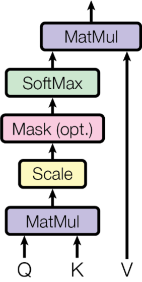
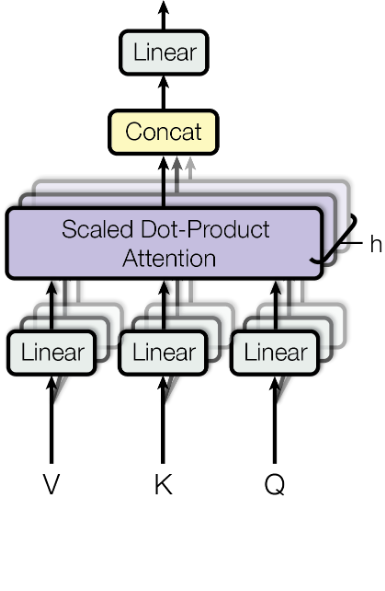
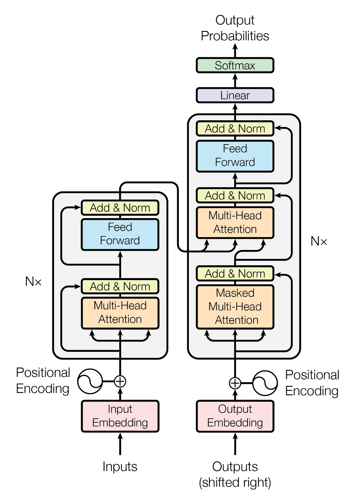
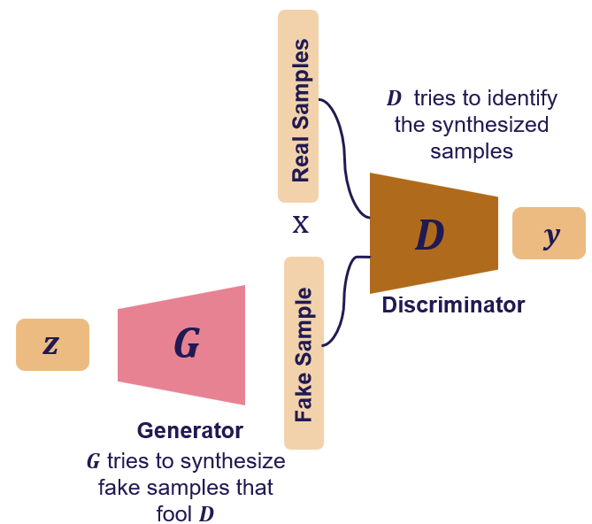
Abbreviations
Foundations (M1)
AI — Artificial Intelligence
ML — Machine Learning
DL — Deep Learning
PCA — Principal Component Analysis
LDA — Linear Discriminant Analysis
Sw / SB — within- / between-class scatter
MLP & CNN (M2)
MLP — Multi-Layer Perceptron
FC — Fully Connected (layer)
FFN — Feed-Forward Network
ReLU — Rectified Linear Unit
CNN — Convolutional Neural Network
BN — Batch Normalization
MSE — Mean Squared Error
CE / BCE — (Binary) Cross-Entropy
Sequence models (M3)
RNN — Recurrent Neural Network
BPTT — Backpropagation Through Time
LSTM — Long Short-Term Memory
GRU — Gated Recurrent Unit
CBOW — Continuous Bag of Words
POS — Part of Speech (tagging)
Generative (M9–10)
AE — Autoencoder
VAE — Variational Autoencoder
ELBO — Evidence Lower Bound
KL — Kullback–Leibler divergence
GAN — Generative Adversarial Network
WGAN — Wasserstein GAN
Attention (M10)
MHA — Multi-Head Attention
Q / K / V — Query / Key / Value
dₖ — key dimension (scaling factor)
PE — Positional Encoding